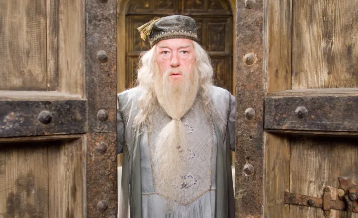
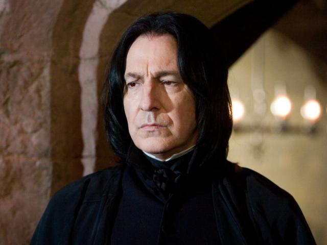
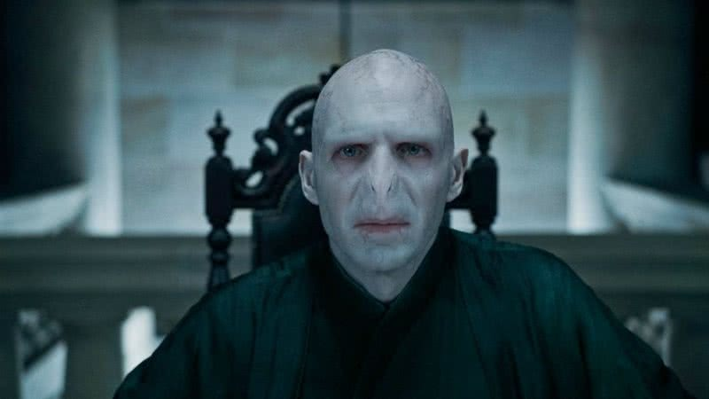

Harry Potter
O protagonista da série. Um jovem bruxo famoso por sobreviver ao ataque de Lord Voldemort quando bebê, o que deixou uma cicatriz em forma de raio em sua testa. Ele é conhecido por sua coragem e lealdade, e seu destino está intrinsecamente ligado à luta contra Voldemort.
Hermione Granger
Melhor amiga de Harry e Ron. Ela é uma bruxa extremamente inteligente e talentosa, conhecida por sua habilidade com feitiços e seu vasto conhecimento de magia. Hermione é uma aluna exemplar e frequentemente ajuda a resolver problemas difíceis com sua inteligência e dedicação.
Ron Weasley
Melhor amigo de Harry e Hermione. Ele vem de uma família bruxa grande e amorosa. Ron é leal e corajoso, apesar de muitas vezes se sentir inseguro em comparação com seus amigos mais brilhantes. Ele tem um bom coração e uma grande habilidade em estratégias e xadrez bruxo.
Albus Dumbledore
Diretor de Hogwarts e uma das figuras mais poderosas e sábias do mundo bruxo. Ele é mentor de Harry e desempenha um papel crucial na luta contra Voldemort. Dumbledore é conhecido por sua sabedoria, bondade e um senso de justiça muito profundo.
Severus Snape
Professor de Poções em Hogwarts e, posteriormente, Diretor da escola. Inicialmente, ele parece ser antagonista, mas sua verdadeira lealdade e sacrifícios são revelados mais tarde. Snape é complexo e tem um passado complicado, e sua história é central para a conclusão da série.
Lord Voldemort
O principal antagonista da série. Seu nome verdadeiro é Tom Riddle, e ele é um bruxo das trevas que busca dominar o mundo bruxo e erradicar todos os bruxos nascidos de pais trouxas. Ele é conhecido por seu uso de magia negra e sua busca pela imortalidade.
Draco Malfoy
Um aluno de Slytherin e rival de Harry. Ele vem de uma família bruxa rica e tradicionalmente orientada para as Artes das Trevas. Draco é frequentemente hostil em relação a Harry e seus amigos, mas seu personagem também tem uma trajetória de crescimento e complexidade ao longo da série.